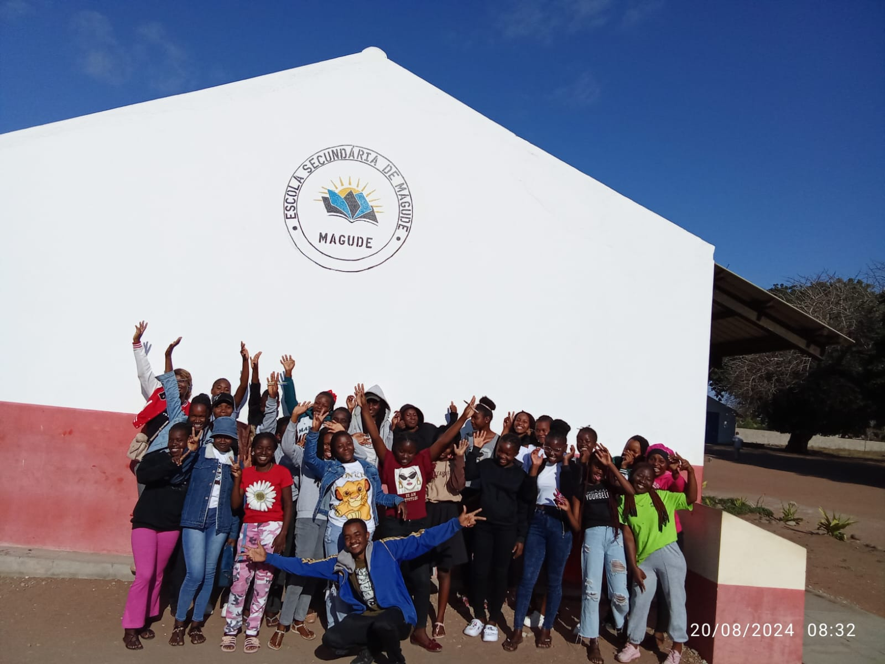

Sobre Nós
Somos um grupo de raparigas do Distrito de Magude, com idades entre 14 e 22 anos, comprometidas em transformar o setor agropecuário e impulsionar o desenvolvimento sustentável na era digital.
Magude destaca-se como um dos grandes produtores de carne bovina em Moçambique e uma das regiões mais promissoras para o cultivo de milho. Com foco em práticas agrícolas sustentáveis e inovadoras, buscamos fortalecer a economia local, promovendo o progresso e o bem-estar da nossa comunidade. Nosso objetivo é liderar a mudança, aproveitando as oportunidades tecnológicas para garantir um futuro mais próspero e sustentável para todos.
